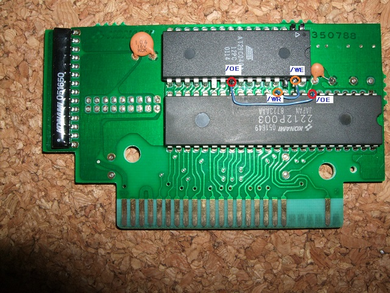
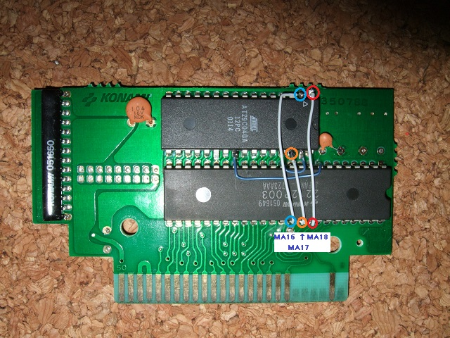

７．AM29F040の配線(1/2)
AM29F040の配線をします。
2212P003の8ピン(/OE)とAM29F040の24ピン(/OE)を接続します。
2212P003の12ピン(/WR)とAM29F040の31ピン(/WE)を接続します。

次に2212P003の40,39,38ピン(MA18,MA17,MA16)をAM29F040の1,30,2ピン(A18,A17,A16)に接続します。

次へ
 次へ
次へ